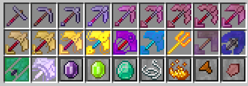
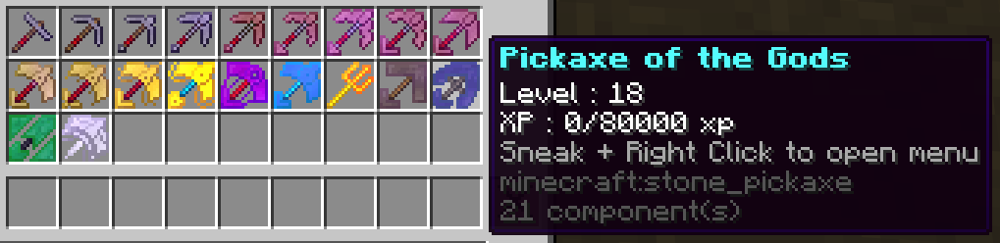
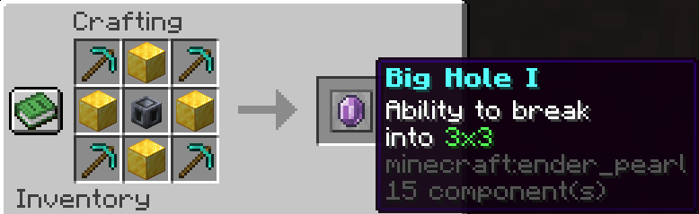
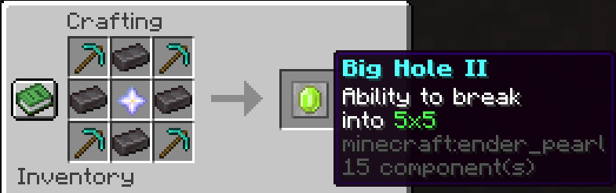
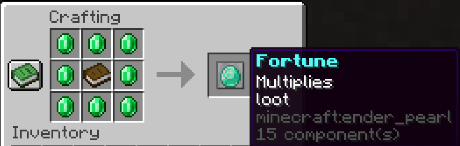
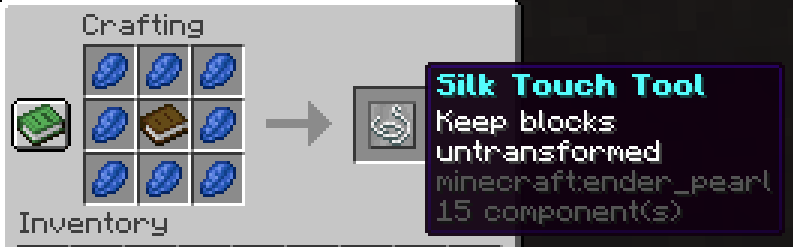
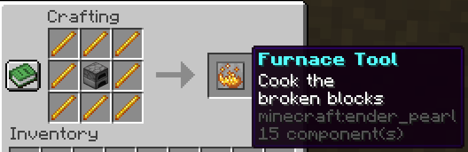
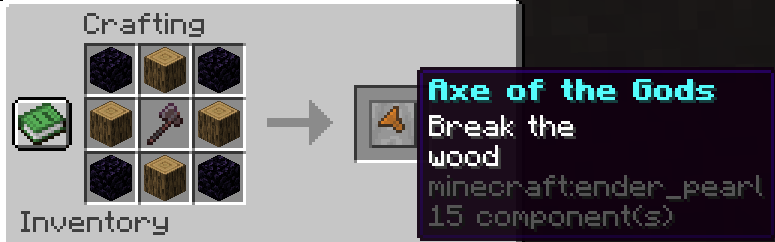
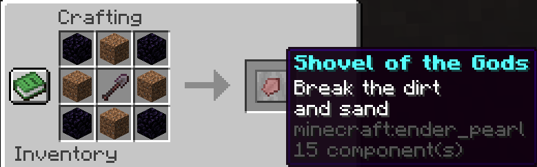

La Pickaxe of the Gods est une pioche unique qui évolue au fur et à mesure que vous cassez des blocs.
Chaque utilisation lui permet de gagner de l’expérience, améliorant progressivement ses capacités et la rendant de plus en plus puissante.
Vous pouvez également fabriquer des améliorateurs afin d’optimiser ses performances et d’accélérer son évolution, rendant votre outil encore plus redoutable et polyvalent.

Pour augmenter le niveau de la Pickaxe of the Gods, il vous suffit de casser des blocs avec celle-ci.
Chaque niveau nécessite un certain nombre de blocs à miner avant de passer au niveau suivant, ce qui récompense votre utilisation régulière et progressive.
Voici les pré-requis pour chaque niveau :
1 → 2 : 750 blocs
2 → 3 : 1 250 blocs
3 → 4 : 2 500 blocs
4 → 5 : 5 000 blocs
5 → 6 : 7 500 blocs
6 → 7 : 10 000 blocs
7 → 8 : 12 500 blocs
8 → 9 : 15 000 blocs
9 → 10 : 20 000 blocs
10 → 11 : 25 000 blocs
11 → 12 : 30 000 blocs
12 → 13 : 35 000 blocs
13 → 14 : 40 000 blocs
14 → 15 : 45 000 blocs
15 → 16 : 50 000 blocs
16 → 17 : 60 000 blocs
17 → 18 : 70 000 blocs
18 → 19 : 80 000 blocs
19 → 20 : 90 000 blocs
En plus de l’augmentation de niveau, certains paliers débloquent des améliorations qui rendent votre pioche encore plus puissante :
Niveau 5 : Furnace, Silk Touch et Fortune
Niveau 10 : God Axe et God Shovel
Niveau 15 : Big Hole I
Niveau 20 : Big Hole II
Ces améliorations permettent à la Pickaxe of the Gods de devenir progressivement plus puissante, polyvalente et efficace, récompensant votre progression et vos efforts dans le minage.

L’amélioration Big Hole I permet de miner une zone de 3×3 blocs en une seule action avec la pioche.
Cette capacité rend le minage beaucoup plus rapide et efficace, notamment pour les grandes zones ou les sessions de farm intensives.
Si l’amélioration God Axe est débloquée, cet effet fonctionne également avec la hache.
De la même manière, si vous avez débloqué God Shovel, l’effet 3×3 s’applique aussi à la pelle.
Cette mécanique polyvalente vous permet ainsi de miner, couper du bois et creuser avec le même outil, optimisant votre efficacité dans toutes vos activités.

L’amélioration Big Hole I permet de miner une zone de 5×5 blocs en une seule action avec la pioche.
Cette capacité accélère énormément le minage et permet de dégager de grandes surfaces beaucoup plus rapidement.
Si l’amélioration God Axe est débloquée, cet effet fonctionne également avec la hache.
De la même manière, si vous possédez l’amélioration God Shovel, l’effet 5×5 s’applique aussi à la pelle.
Cela rend l’outil particulièrement polyvalent, puisqu’il peut servir aussi bien pour miner, couper du bois ou creuser de larges zones efficacement.

L’amélioration Fortune, comme son nom l’indique, permet d’augmenter la quantité de minerais obtenus lorsque vous minez.
Grâce à cet effet, certains blocs peuvent donner deux fois plus de ressources, voire davantage selon la chance obtenue.
Ce fonctionnement est similaire à l’enchantement Fortune présent dans Minecraft, ce qui permet d’améliorer considérablement la rentabilité de vos sessions de minage.

L’amélioration Silk Touch, comme son nom l’indique, permet de récupérer directement les blocs dans leur forme naturelle lorsque vous les minez.
Au lieu d’obtenir les ressources habituelles, vous récupérez le bloc lui-même, ce qui peut être très utile pour la construction ou certaines utilisations spécifiques.
Ce fonctionnement est similaire à l’enchantement Silk Touch présent dans Minecraft.

L’amélioration Furnace permet de cuire automatiquement certains blocs et minerais lorsque vous les minez.
Au lieu de récupérer le minerai brut, vous obtenez directement la ressource fondue, comme par exemple un lingot après avoir miné le minerai correspondant.
Ce fonctionnement est similaire à l’enchantement Auto-Smelt / Smelting, ce qui permet de gagner du temps en évitant d’utiliser un four.

L’amélioration God Axe permet de transformer votre pioche en hache également.
Ainsi, vous pouvez utiliser le même outil pour miner la pierre et casser le bois sans avoir à changer d’objet.
Cette amélioration rend votre pioche beaucoup plus polyvalente et pratique, idéale pour optimiser vos sessions de minage, de coupe de bois ou de construction.

L’amélioration God Shovel permet de transformer votre pioche en pelle également.
Grâce à cette amélioration, vous pouvez casser des blocs comme la terre, le sable ou le gravier efficacement sans avoir besoin de changer d’outil.
Cela rend la pioche encore plus polyvalente, puisqu’elle peut être utilisée pour miner, creuser et farmer différents types de blocs avec un seul objet.
